02 / Selected work
Beberapa project yang
gue pengen tunjukin.
Tiga project, masing-masing berangkat dari kebutuhan yang beda.
01
TEAMCUT.
REAL CLIENT · BARBERSHOP
Pengalaman booking dan antrean barbershop yang dirancang mobile-first.
THE APPROACH
Dari lihat antrean, pilih cabang dan hairstylist, sampai mengirim booking lewat admin
TEAMCUT.
THE BUILD
UI/UX · Frontend · Database · Deployment
Visit TEAMcut ↗
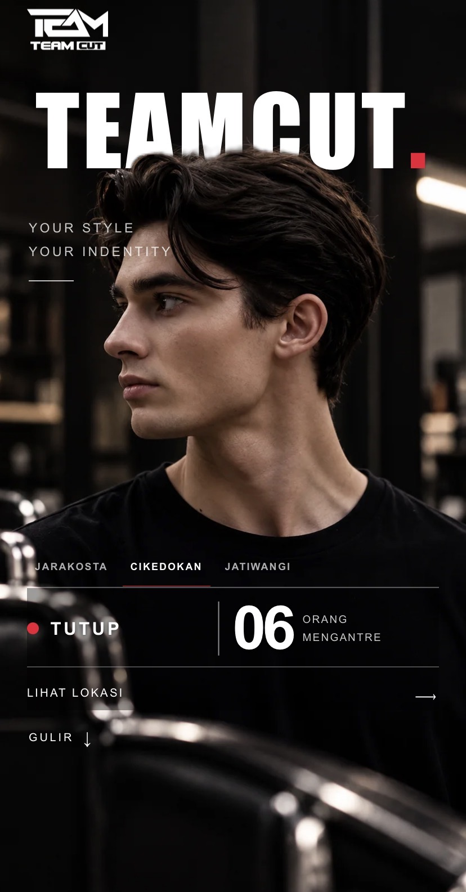
01 / HOME
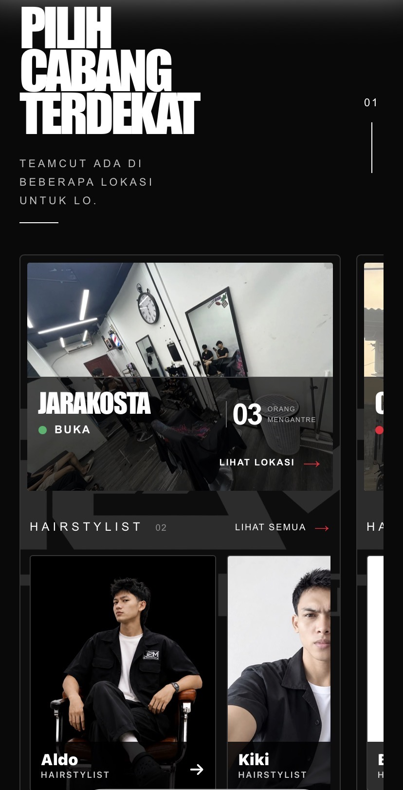
02 / BRANCH + STYLIST
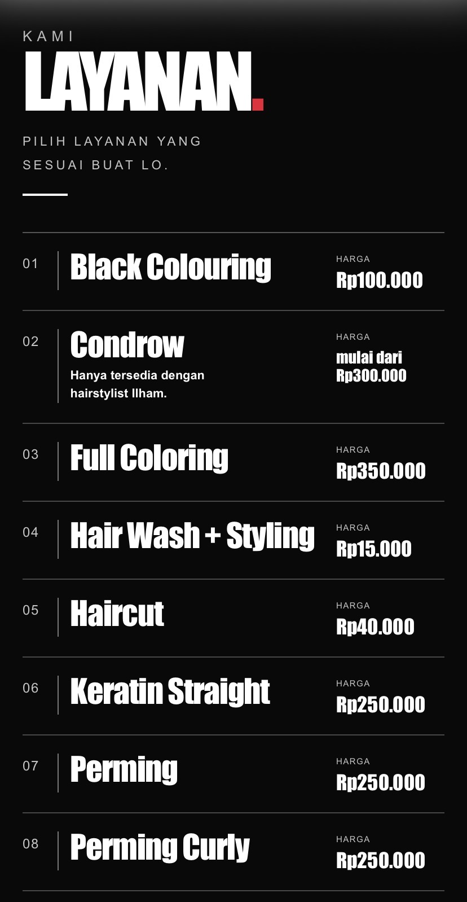
03 / SERVICES
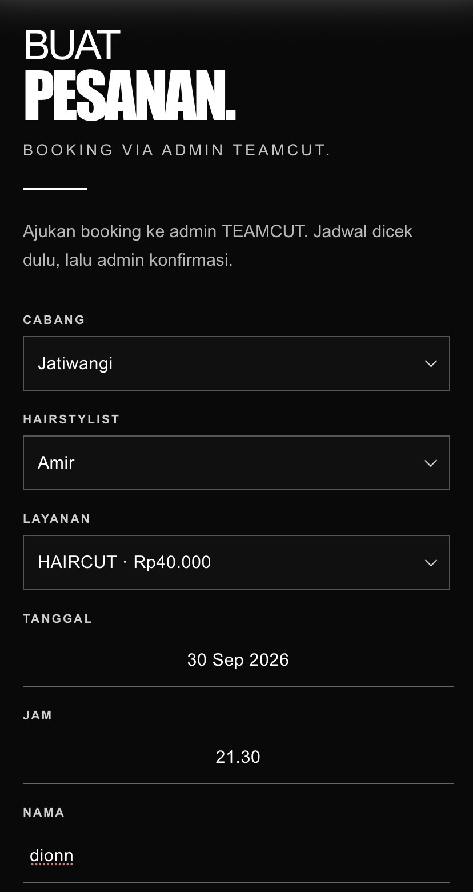
04 / BOOKING
UI/UX · FRONTEND · DATABASE ·
DEPLOYMENTMOBILE ONLY
02
Dua Saudara.
BUSINESS WEBSITE · FURNITURE
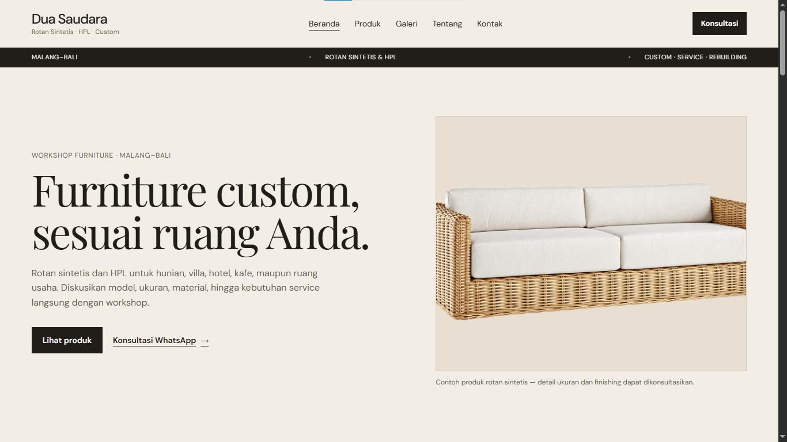
01 / BERANDA
Website bisnis furnitur untuk lihat produk, buka katalog, lalu
konsultasi langsung dengan workshop.
Rotan sintetis · HPL · Custom furniture
Visit Dua Saudara ↗
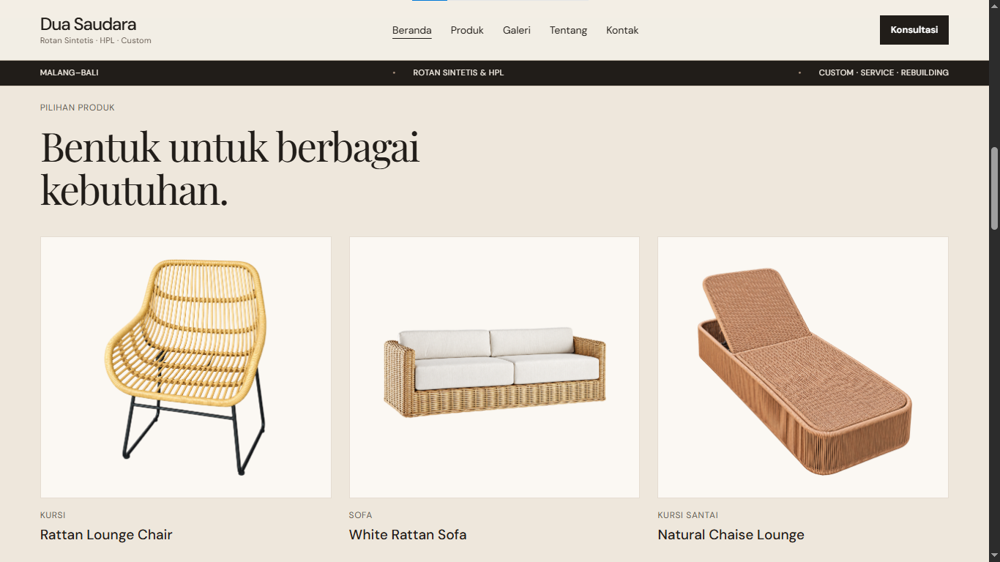
02 / PRODUCTS
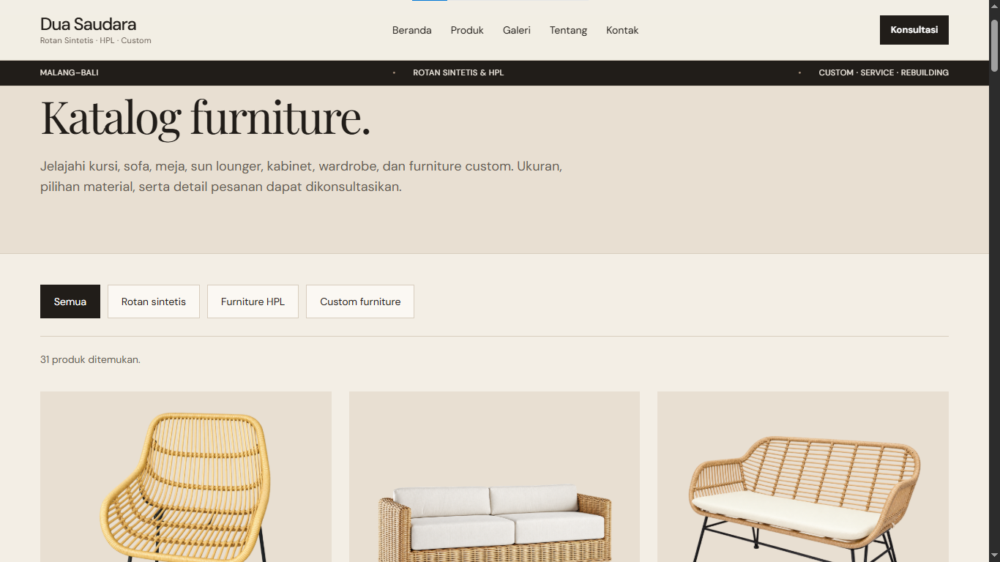
03 / CATALOG
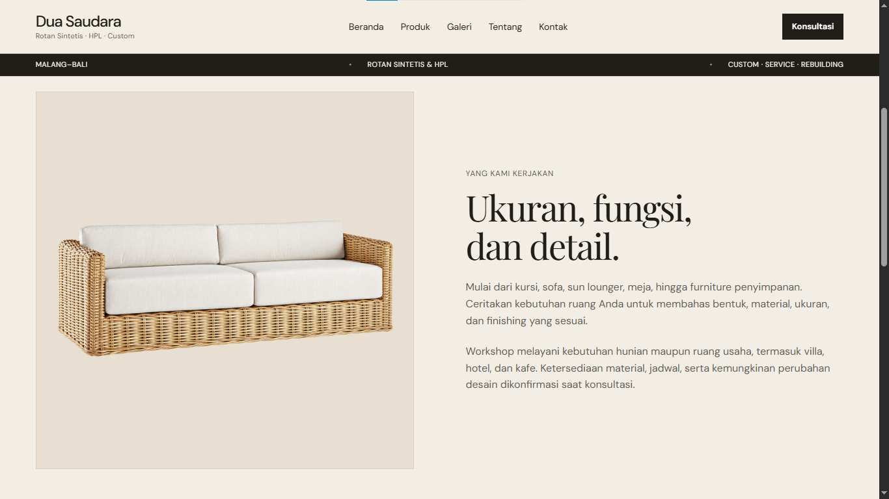
04 / DETAIL
WEB DESIGN · FRONTEND · CONTENT STRUCTURE ·
DEPLOYMENTMALANG—BALI
03
Bagong Lapar.
REAL PROJECT · OUTDOOR
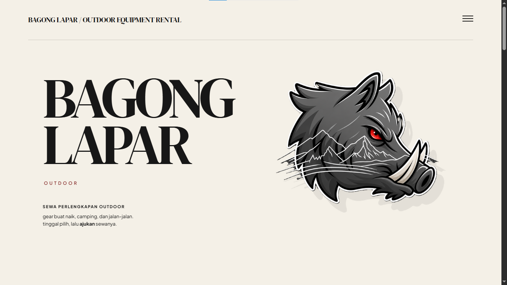
DESKTOP / HOME
Website penyewaan perlengkapan outdoor buat rencana naik, camping, dan
jalan-jalan.
Visual direction · Web design · Frontend · Deployment
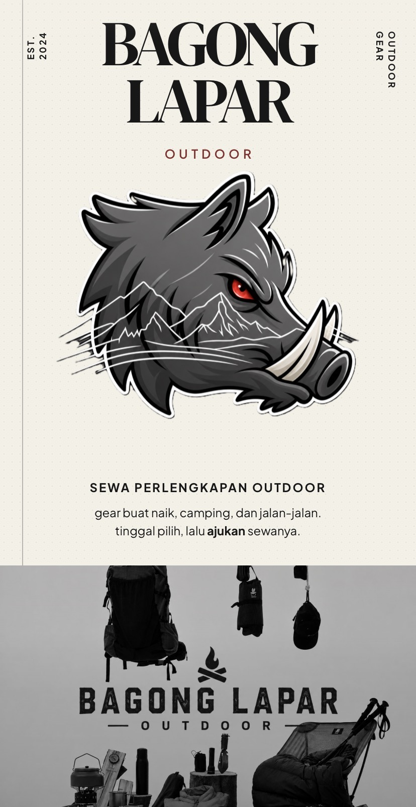
MOBILE / HOME
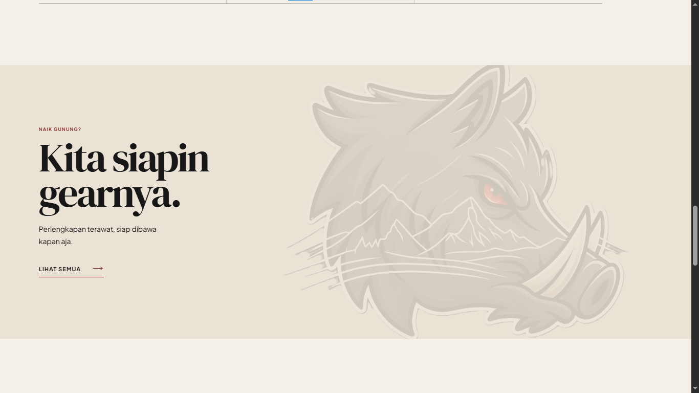
DESKTOP / POPULAR GEAR
VISUAL DIRECTION · WEB DESIGN · FRONTEND ·
DEPLOYMENTDESKTOP + MOBILE